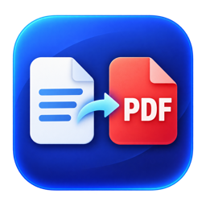
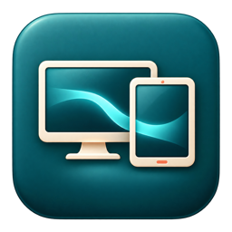
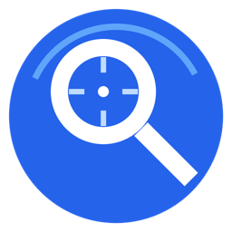

DOCUMENTSTopDF
Word, Excel, PowerPoint, HWP/HWPX 문서를 오프라인에서 PDF로 변환하세요. 페이지 범위와 용지 방향을 고르고, 원하는 위치에 저장합니다.
macOS · Windows · Android
살펴보기 ↗필요해서 만든 앱, 궁금해서 시작한 로봇 연구.
직접 만든 도구와 실험을 이곳에 모읍니다.

DOCUMENTSWord, Excel, PowerPoint, HWP/HWPX 문서를 오프라인에서 PDF로 변환하세요. 페이지 범위와 용지 방향을 고르고, 원하는 위치에 저장합니다.

CONNECTED DEVICESUSB로 연결한 Galaxy Tab을 터치 가능한 확장 화면으로 활용하고, 텍스트·사진·파일을 Mac과 양방향으로 공유합니다.

DESKTOP TOOLSWin + Ctrl을 누르고 마우스 휠을 돌리세요. 마우스 위치를 중심으로 화면을 확대하고, 가장자리에서 마우스를 움직여 화면을 이동합니다.